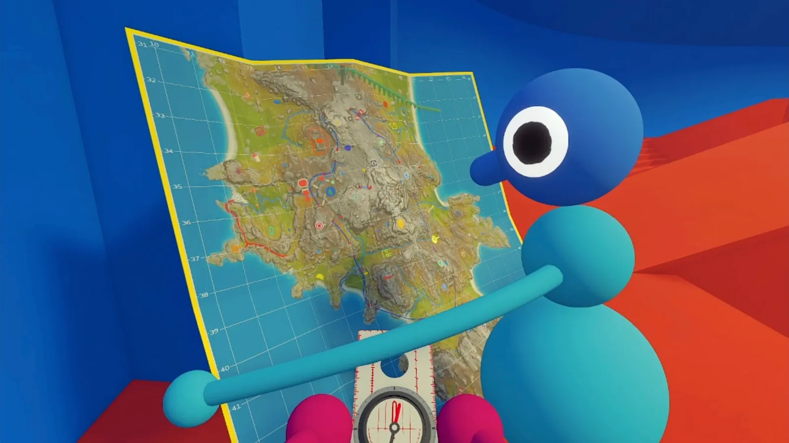
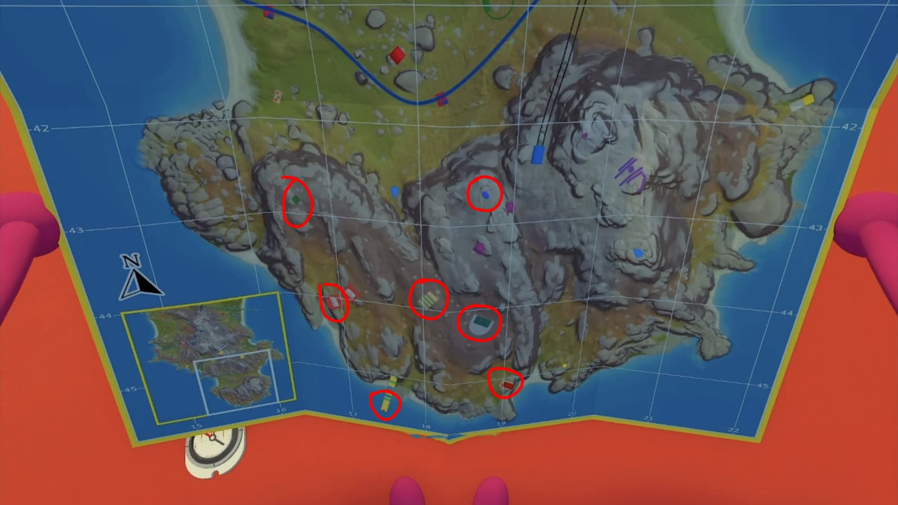
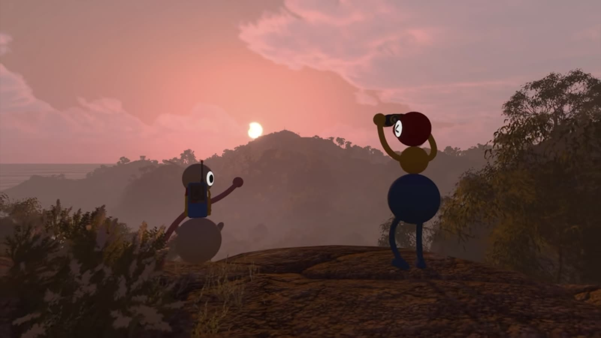
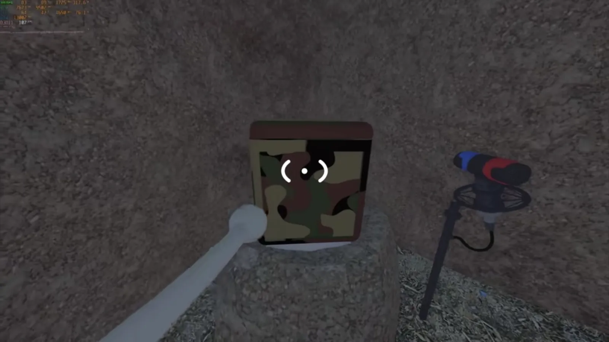

Illustrated Guides
A screenshot-first Big Walk visual guide. Each walkthrough is laid out step by step, with a dedicated screenshot for every step — jump straight to the one you're stuck on.
Available guides

How to Find the Map in Big Walk
Collect 5 red objects, grab the key from the red tower, then follow the cutting machines to the map room. Every step has its own screenshot.
Read the guide→
Big Walk True Ending — The Purple Gourds
Where the 7 purple gourds live in Challenge Ridge and how to solve each one, with a screenshot per step — then the 8 red gourds and the white key true ending.
Read the guide→
Big Walk Review: A Deeper Kind of Co-op
On the proximity voice system, the wordless puzzles, and why it might be the best multiplayer game of the year.
Read the guide→
Green Seat Speaker Puzzle — The Fastest Route
One player waits in the green seat while the other drops down past the green stairs and signs to the camo box. The fastest way to the red gourd, shown step by step with screenshots.
Read the guide→